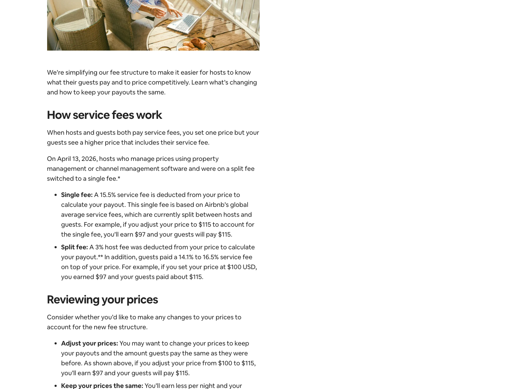

Pricing Page Visual

Airbnb's Resource Center page shows split-fee and single-fee logic side by side: guest-visible service fee under split fee, host payout deduction under single fee, and the host price-adjustment choice.
The mechanism to notice is fee location. The service fee moves between checkout visibility and payout economics.
Screenshot captured: 2026-05-06 · Source reviewed: 2026-05-06 · Region or language captured: English (US)
Core Insight
Airbnb changes the bill by moving the platform fee from guest-visible checkout fee to host-side payout deduction.
Pricing Logic Deconstruction
The bill changes when Airbnb applies split-fee versus single-fee logic.
The same platform service fee can appear at guest checkout, in host payout economics, or through a host price response.
Booking subtotal matters, but the teaching mechanism is where the service fee appears.
Moving to single fee makes the host response part of the pricing architecture.
This is a fee-incidence case, not a generic table of Airbnb fee percentages.
Strategic Logic
Hypothesized pricing-relevant causal logic. Not proof.
Pricing Mechanism Logic
Primary component: value_extraction_map
The service fee moves location. Platform value capture can remain, while fee visibility and host payout economics change.
Bill Examples
Illustrative bill scenarios showing fee incidence without inventing unsupported exact prices.
| Scenario | Base layer | Variable layer | Final bill logic | Pricing lesson |
|---|---|---|---|---|
| Split-fee booking | Host listed price | Guest service fee at checkout; host service fee deducted from payout | Guest payment = listed price + guest service fee; host payout = listed price - host service fee. | The guest sees a higher checkout price than the host listed price. |
| Single-fee booking with price adjustment | Adjusted host listed price | Full service fee deducted from host payout | Guest payment = adjusted listed price; host payout = adjusted listed price - single fee deduction. | The final guest payment can stay similar, but the fee is embedded in host-side payout logic. |
| Single-fee booking without price adjustment | Unchanged host listed price | Full service fee deducted from host payout | Guest payment = unchanged listed price; host payout = unchanged listed price - single fee deduction. | Guests may pay less, but host payout falls. |
| Cross-currency split-fee booking | Host listed price | Guest service fee may include an additional amount within Airbnb's stated range | Guest payment = listed price + adjusted guest service fee; host payout follows host service fee deduction. | Currency condition can change guest fee exposure even when host price is unchanged. |
Pricing Architecture
Public pricing structure reviewed May 6, 2026. Exact rates vary by host category, geography, currency, listing type, and Airbnb policy changes.
The architecture separates listed price, checkout visibility, and payout deduction.
Fee structure changes by host category, listing state, geography, currency condition, and booking type.
The central driver is fee incidence structure; other drivers set calculation or boundary conditions.
Movement between fee states changes visibility and payout economics.
Boundary Crossing Map
Where a booking or host crosses into a different fee-incidence state.
Decision Tension Layer
Fee-incidence tension caused by the shift from split fee to single fee.
Decision Alternatives
Concrete pricing moves, trade offs, and leading indicators.
Pricing move: Show hosts how listed-price adjustments affect guest payment and host payout under single-fee logic.
Effect: Reduces host confusion and helps hosts preserve payout without overcorrecting listed prices.
Trade off: The larger host-side deduction becomes more salient.
Signal: Higher price adjustment tool usage and fewer payout-drop support contacts.
Pricing move: Explain that single-fee guest-facing price includes service-fee economics.
Effect: Improves guest trust and reduces checkout fee surprise.
Trade off: Guests may become more aware that hosts can recover the service fee in listed price.
Signal: Lower checkout abandonment after price breakdown view and higher perceived transparency.
Pricing move: Offer hosts a before-and-after comparison of split fee versus single fee using their own booking examples.
Effect: Clarifies whether guests pay roughly the same, hosts earn the same, or either side changes.
Trade off: Winners and losers may become more explicit.
Signal: Higher fee migration comprehension and lower service-fee dispute rate.
Decision Priority
Which pricing move should be tested first, and why.
| Rank | Move | Why this priority | Risk | Complexity | Success metric |
|---|---|---|---|---|---|
| 1 | Host payout preservation preview | It addresses the biggest adoption risk: hosts may not understand how to preserve payout after fee incidence shifts. | low | low | Higher price adjustment tool usage and lower payout-drop complaint rate. |
| 2 | Fee migration comparison view | It explains before-and-after economics using concrete booking examples, reducing confusion around the migration. | medium | medium | Higher fee structure comprehension and lower service-fee dispute rate. |
| 3 | Guest total-price clarity label | It improves guest trust, but it is downstream from host price adjustment quality. | medium | low | Lower checkout abandonment after price breakdown view. |
Reasoning Error Check
Stress test the pricing logic before accepting the recommendation.
| Reasoning risk | Case-specific check | Evidence needed | Failure signal |
|---|---|---|---|
| Assuming single-fee pricing automatically improves conversion because it simplifies guest-facing price. | Separate observed fee incidence structure from hypothesized conversion impact. | Booking conversion, checkout abandonment, host payout, and price adjustment data before and after migration. | Guest price transparency improves, but conversion does not rise or host dissatisfaction offsets the benefit. |
| Treating the change as only a fee increase rather than a fee incidence and visibility redesign. | Keep the analysis centered on who sees the fee, who absorbs it, and how listed price changes. | Official split-fee and single-fee examples showing guest payment and host payout under both structures. | Students explain the case as Airbnb simply charging hosts more. |
| Ignoring the boundary between split fee, single fee, and host price adjustment response. | Show the transition from guest service fee to host payout deduction and the host markup decision. | Official Airbnb evidence explaining when single fee applies and how hosts can adjust prices. | The case becomes a generic marketplace fee table instead of a fee-incidence mechanism case. |
| Suggesting price transparency without recognizing host payout risk and visible listed-price inflation. | Every recommended pricing move must include both guest-side and host-side trade offs. | A/B data or migration analytics comparing guest conversion, host payout satisfaction, and listing price changes. | Guest transparency improves but host economics or perceived competitiveness worsen. |
References
- Airbnb Help Center. (n.d.). Airbnb service fees. Retrieved May 6, 2026, from https://www.airbnb.com/help/article/1857
- Airbnb Resource Center. (2026, April 10). Simplifying Airbnb service fees. Retrieved May 6, 2026, from https://www.airbnb.com/resources/hosting-homes/a/simplifying-airbnb-service-fees-746
- Airbnb Resource Center. (2020, November 16). How much does Airbnb charge hosts?. Retrieved May 6, 2026, from https://www.airbnb.com/resources/hosting-homes/a/how-much-does-airbnb-charge-hosts-288
- Airbnb Resource Center. (2026, March 22). Simplifying service fees. Retrieved May 6, 2026, from https://www.airbnb.com/resources/hosting-homes/a/simplifying-service-fees-761